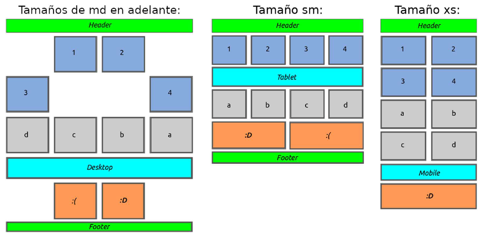

Offset y ordenación
En este ejercicio vamos a practicar con algunas características más de
Bootstrap: la posibilidad de añadir un offset (o espacio inicial a las
columnas), el cambio de orden de los elementos de una fila y la
visibilidad de las columnas según el tamaño del dispositivo.
Para ello nos crearemos una nueva página web partiendo de la plantilla
básica, le añadiremos un contendor de tipo container e iremos añadiendo
filas y columnas intentando imitar el diseño, colores y contenidos del
esquema de la siguiente figura:

Tened en cuenta que:
-
La segunda fila (que contiene 4 columnas con los números 1, 2,
3 y 4) es solamente una fila a la que se le han añadido offsets.
Para forzar el cambio de fila se puede añadir un elemento entre
la 2ª y la 3ª columna que solo sea visible cuando la pantalla
sea mediana o grande (md, lg, xl o xxl) y que aplique la
clase .w-100 de Bootstrap.
-
El orden de la tercera fila (con las letras a, b, c, d) se ha alterado
para las disposiciones de pantalla grandes (md, lg, xl y xxl)
usando las clases de bootstrap order-*.
-
En la 5ª fila naranja se ha aplicado un cambio de orden y un
offset para las pantallas grandes y medianas (md, lg, xl y xxl).
Además, cuando la pantalla sea de tipo xs se deberá de ocultar
una de sus columnas.
-
La fila azul claro en la que pone Desktop (para pantallas md, lg,
xl y xxl), Tablet (para sm) y Mobile (cuando la pantalla es xs) en
realidad son 3 filas distintas con clases para que solo se
muestren en dichos tamaños de pantalla.
-
La última fila (Footer) se deberá de ocultar solamente cuando
la pantalla sea del tipo xs.
Resultado
Header
Desktop
Tablet
Mobile
Footer